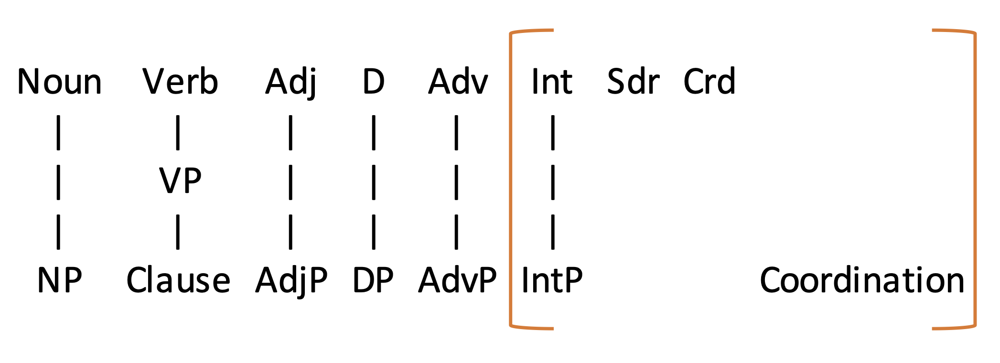
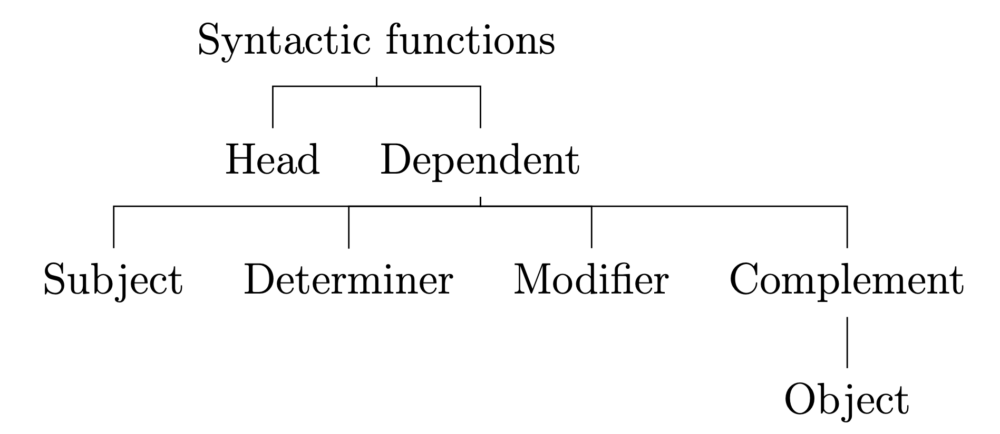

Categories
The full list of lexical and phrasal categories is shown below.

We've now looked at Noun, Verb, Determinative, Adjective, Preposition, Adverb and their phrasal projections.
We haven’t looked at Interjections, Subordinators, Coordinators, or Coordinations.
Noun
- exclusively denotes a person place or thing
- also can denote actions, properties, relations, concepts, etc.
(almost anything really)
- may participate in the system of number
may be countable
may have a plural form
- functions as head of NP
- may take a determiner as its dependent
- may be modified by an AdjP
NP
- Typically functions as subject or object
- usually headed by N
Verb
- denotes actions and states, but not physical objects
- usually has a 3rd person singular -s form
- has a past-tense form, apart from 2 or 3 highly defective verbs
- has an -ing form, apart from the modal auxiliary verbs
- functions as head of VP
- cannot be modified by an AdjP
VP
- functions as head of clause
- functions as modifier in NP
- functions as complement in VP, NP, AdjP, and PP
- headed by V
Clause
- Headed by VP
- Typically has a subject
Adjective
- denotes properties or characteristics, but not objects
- may have a comparative -er and superlative -est form
(especially single-syllable Adj)
- functions as head of AdjP
- may be modified by very, too, and so
- may be graded with more, less, most, and least
AdjP
- functions as modifier in NP
- functions as complement to be, seem, and become
- doesn't function as modifier in VP
- headed by Adj
Determinative
- functions as head of DP
- usually has only one form (unlike pronouns)
- marks NP as definite or indefinite
- usually cannot occur together with the or a
- usually can appear in this slot: __ of the N (e.g., some of the people, each of the pencils)
- may be modified by other determinatives (e.g., many more people)
DP
- typically functions as determiner
- can sometimes function as modifier in DP, AdjP, or AdvP
- headed by D
Adv
- functions as head of AdvP
- often formed from Adj + -ly (happily)
- often gradable (well, better, best; quickly, more quickly, most quickly)
- usually modifiable by very
AdvP
- functions as modifier of almost any constituent except N, but including NP
- Rarely function as complement
- Rarely takes complements
- headed by Adv
Preposition
- typically denotes relations in space or time
- functions as head of PP
- usually has no suffixes or prefixes
- usually has only one form
- typically takes Obj:NP as its complement
- takes a variety of complements, including PP (out of…), Clause (before I arrived), & AdjP (for free), or no complement at all
- may be modified by AdvP, especially even, right, just, and almost
- Not typically modified by degree modifiers like very, too, and pretty.
PP
- functions as complement in VP, PP, NP, & AdjP
- functions as modifier in Clauses, VP, & NP
- very rarely functions as subject
- headed by P
Functions
Here’s a hierarchy of syntactic functions:

As you can see, Heads are special: everything else depends on them. As a result, everything else is a dependent. So far, we’ve seen four main kinds of dependent.
Subjects
- A subject is a dependent in a clause
- The subject typically occurs before the head verb.
- In certain kinds of questions, the subject occurs after an auxiliary verb.
- The subject is usually the topic of the sentence.
- If there is an action, it’s usually the person or thing doing the action.
- If there is a present-tense verb, it typically agrees with the subject.
- The subject is usually an NP, but Subj:Clause is also common, and Subj:PP is possible.
Determiners
- A determiner is only and always a kind of dependent in an NP.
- An NP will never have more than one determiner (though other NPs inside the NP may have their own determiners).
- Determiners are (almost) always determinatives or possessive NPs.
- A singular countable noun needs a determiner to form an NP.
- Determiners typically come before modifiers in the NP.
Complements
- Complements are so named because they often "complete" a phrase.
- Almost any kind of phrase can be a complement, though AdvPs complements are rare.
- Complements usually follow their head. In contrast, modifiers can often move around (e.g., the modifier quickly can go at the beginning, middle, and end of she changed direction).
- Complements are "selected" by their head (e.g., listen to the music not *listen about the music) .
- Phrases about where or when the situation happens or holds are typically modifiers, not complements.
- A modifier usually will not occur between a head and a complement.
- There can be zero, one, or two complements. A very small number of verbs take three complements (e.g., I bet you $100 that you will be a good teacher).
- Unfortunately, the boundary between complements and modifiers can be very fuzzy.
Objects
Objects are a special kind of complement.
- Objects are dependents only in VPs or PPs.
- Objects are almost always NPs.
- If there’s an action, the object is usually what is acted on.
- The object of an active sentence is usually the subject of the related passive sentence (e.g., I made the cake --> the cake was made).
Modifiers
- Modifiers appear in most kinds of phrases.
- Typical modifiers are AdjPs and AdvPs, but almost any phrase can function as a modifier.
- Modifiers are quite flexible.
- Modifiers can often be removed without significant change of meaning.
- Modifiers can almost always be added or removed without affecting grammaticality.
- The number of modifiers is typically unlimited.
- Unfortunately, the boundary between complements and modifiers can be very fuzzy.